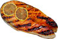

Concept
Proef zalm op 10 verschillende wijzen
Aan de rand van het Vierwoudstrekenmeer, hebben we 10 unieke standjes neergezet, waar telkens zalm op een andere wijze wordt klaargemaakt. Je betaalt aan de ingang een vast bedrag en dan proef je er maar op los!
Bekijk het menu